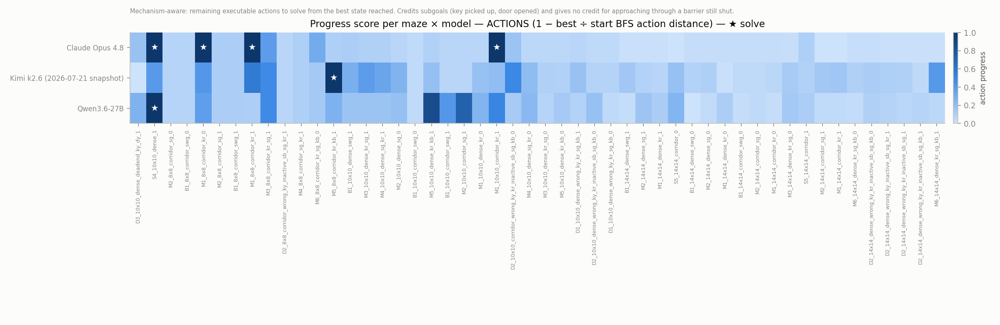
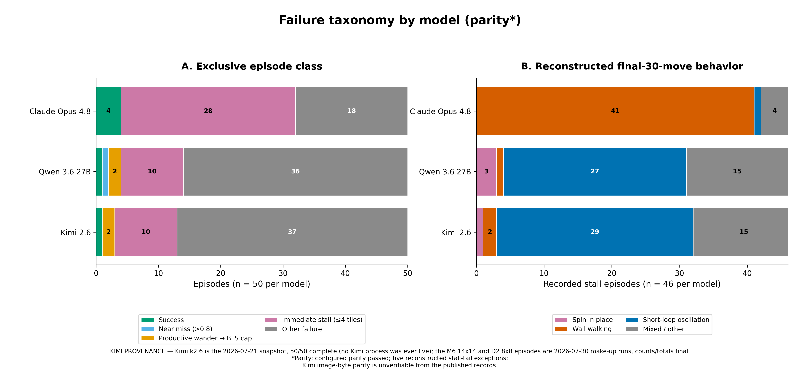
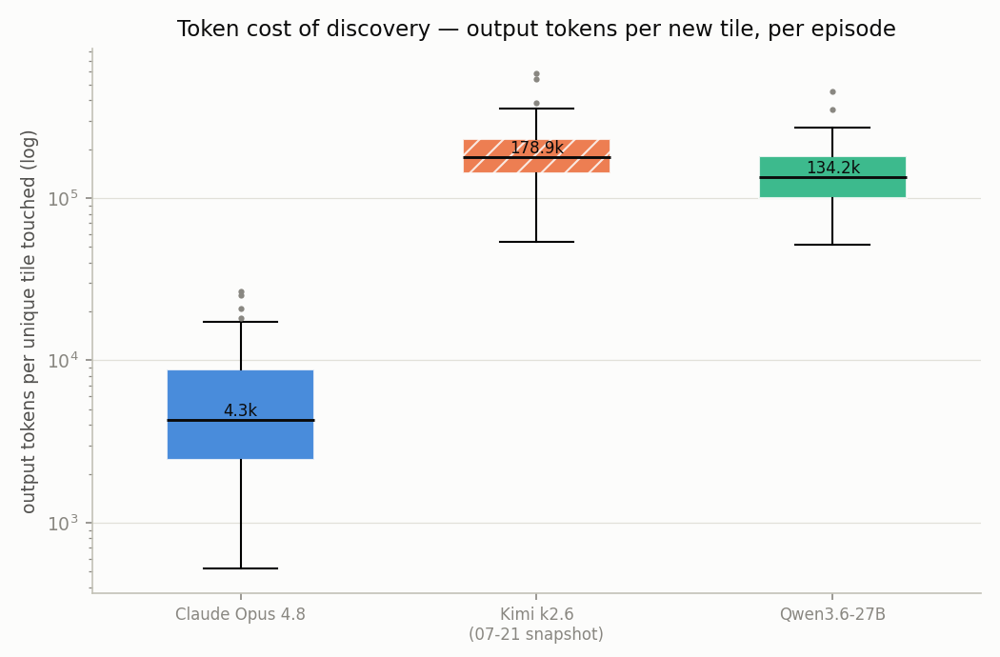

Why mazes with mechanisms
Evaluating long-horizon agentic capability needs a substrate with four properties at once. Mazes with causal mechanisms are the simplest structure we know of that has all four.
An agentic benchmark returns one number per episode, and that number contains at least three separable things: what the agent can do, how the world was presented to it, and the harness it ran inside. In a fixed world, none of the three can be varied independently of the others. So a model that never worked out what an object does, a model that had the right plan and drifted mid-execution, and a model that took the distractor bait all arrive as the same failed episode — even though they are different problems with different fixes.
MultiNet v2.0 is built so those things stay separable. The task is an agent in a 2D grid with walls, keys, doors, switches, gates and distractors, and a goal tile. There are six actions and the mechanics are never explained. Nothing is explained because prior domain knowledge is the confound the design removes: a failure here cannot be attributed to an unfamiliar API, library or interface, because there is none.
This release is the first measurement on that substrate, in its most basic rendering. We evaluate three frontier models — Claude Opus 4.8, Kimi k2.6 and Qwen3.6-27B — on 50 generated mazes, 150 episodes in total, under a single evaluation protocol chosen by a controlled 540-episode sweep rather than by intuition. Frontier performance is near zero: 6 solves in 150 episodes, and 45 of the 50 mazes were never solved by any model. Models operate the mechanisms they already understand — 27 successful pickups, 15 doors opened, and 4 of the 6 solves on key-door mazes — and never work out the one they would have to learn during the episode: 132 TOGGLE actions produced 2 switch flips, and agents stood on a live switch in 38 episodes without pressing it.
This release is a substrate and design thesis plus a first measurement. Because the representation is projectable, it is also the first step toward A/B testing modality, complexity and other downstream variables against the same underlying puzzle.
Evaluating long-horizon agentic capability needs a substrate with four properties at once. Mazes with causal mechanisms are the simplest structure we know of that has all four.
Nothing to know. No API, no jargon, no priors — so a human baseline means something, and failure can't be blamed on unfamiliarity.
No fixed answer key to contaminate, and difficulty scales with the models instead of saturating.
The same maze can be re-rendered in language or 3D, turning “did it generalize?” from an inference into a direct comparison. Both domains land with the full benchmark.
BFS gives the exact optimal path from any state — an objective difficulty scale, partial credit, and the ability to call one move strictly wrong.
How did frontier Vision-Language Models do on 2D mazes?
The share of episodes in which the agent actually reached the goal tile. Binary per episode, with no credit for getting close.
How much of the distance to the goal was closed, measured at the agent's closest ever approach. 1.0 is a solve; 0 means it never got nearer than where it started.
An egocentric agent on a 2D grid, built on
MiniGrid.
Six actions: TURN_LEFT, TURN_RIGHT, MOVE_FORWARD,
PICKUP, TOGGLE, DONE. The goal is a target tile.
Each turn the agent receives a persistent start-pose line, a prose activity summary of every mechanism event so far, and four rendered frames: the three most recent steps, each followed by the inventory and the action the model itself chose there, then the current frame. It receives no coordinates, no map, no progress signal, and no statement that a move failed. Detecting a failed move requires noticing that the picture did not change.
Solving a maze takes five things in sequence: work out what the objects do, reason about which one unlocks which, plan an order that respects those dependencies, carry the moves out, and recover when something goes wrong. Each mechanism is in the environment because it isolates one of those five, and because each can be added or removed without disturbing the others, a failure can be traced to a stage instead of being averaged across all of them.
| Mechanism | What it isolates |
|---|---|
| Keys & doors | Operating an object the model already understands. Every model has seen a key open a door long before it arrives here. |
| Switches | Working out an object it has never been told about. A switch toggles from the same cell, while doors and gates act on the cell ahead — and the prompt names TOGGLE as valid without explaining either convention. |
| Dependency chains | Ordering. A gate that opens only once a switch is toggled, behind a door that opens only once its key is carried. |
| Distractors | Recovery. Decoy keys, inactive switches and dead-end branches that cost moves without advancing the task. |
| Walls | Execution. Walking into one is an action the world rejects outright — the cheapest possible signal that a plan and the world have diverged. |
Validation is more than a solvability check. Every instance is confirmed reachable by exhaustive
search, and the optimal action count is computed with an executable-action planner rather than an
abstract one, so the figure charges what an agent actually pays: a locked door costs
TOGGLE plus MOVE_FORWARD. Three further checks run against each spec.
Mechanism necessity reports any mechanism whose removal still leaves the task
solvable. Chain ordering confirms each stage is unreachable until the prior stage
has fired. Distractor safety confirms no single distractor interaction can render
the task unsolvable.
These are puzzles people solve without instruction. Try one, then look back at the table above.
The playable maze lands with the release.
Same environment, same rules, same absence of instructions.
A benchmark score is partly a property of the harness. We measured how much before running the benchmark rather than after. The design holds one standard cell fixed and varies twelve conditions across seven axes, each changing exactly one field. The maze manifest is fixed at 15 instances and is completely disjoint from the R1 fifty, so tuning the protocol could not leak into the benchmark it later scored. 540 episodes in total.
| Condition | What it changes | Solves / 45 |
|---|---|---|
baseline_thinking | Not one of the seven axes. Re-runs the standard cell with reasoning enabled on all three models. | 30 |
cond_prompt·standard | The baseline itself: task, action list and mechanism positions, no full rules block. | 27 |
cond_prompt·minimal | Prompt reduced to the task statement and the action list. | 27 |
cond_prompt·verbose | Prompt extended with a full rules block. | 25 |
icl_zero_shot | The worked example removed from the prompt. | 25 |
qry_subgoal | The model commits a multi-step segment per call instead of a single action. | 20 |
ctx_text_summary | History given as a text summary in place of the three recent frames. | 17 |
hist_multiturn | Rolling chat history across turns instead of one self-contained message per query. | 15 |
ctx_current | History removed entirely, leaving only the current frame. | 14 |
act_cardinal | Egocentric turn-and-move replaced with absolute cardinal directions. Observation untouched. | 12 |
qry_full_trajectory | The model commits a complete action sequence in one call. | 11 |
obs_image_only | The text description of the world removed, leaving the rendered image alone. | 5 |
The two choices that most determine an agent benchmark's difficulty are not prompt wording. Removing the text description of the world costs 22 of 27 solves. Changing only the action interface, with the observation untouched, costs 15 of 27. Prompt detail across three levels barely moves the score at all.
R1 took from this: thinking on; the minimal prompt, which scores identically to
standard while giving the model less to lean on; image_only adopted
deliberately because it is the hard setting; the stall watchdog at K=30; and equal 64k
output budgets across all three models.
Three models, 50 mazes, 150 episodes, nothing excluded. The protocol cell is
minimal / image_only / egocentric / zero_shot / text_summary_and_last3 / stateless /
stall-K 30 / 3× BFS cap. Parity was verified: one distinct system prompt across all
150 episodes, first-user text byte-identical across models for every maze, identical task-spec
hashes, zero parse failures and zero refusals.
Read all three columns together. Claude is first on solves and last on progress: it dies early at a median of 35 steps by walking into walls, while Kimi and Qwen survive to around 58 and cover more ground without converting it. Which model “wins” depends entirely on which metric you pick, which is why we publish success, progress and steps-to-termination side by side rather than ranking.


6 solves in 150 episodes. 45 of the 50 mazes were never solved by any model, and one maze was solved by two. Mazes with no switches and a shortest path of 45 moves or fewer produced 6 solves in 24 episodes; all 126 remaining episodes failed. Nothing approaches the goal either — the median episode's closest approach is 19 to 20 tiles, and the only episodes reaching within 3 tiles are the solves themselves.
No solve in 105 switch-maze episodes. It survives the difficulty control: hold the shortest path
at 45 moves or fewer and switch mazes still go 0 for 45 while switchless mazes go 6 for 24. Of
132 TOGGLE actions issued across the run, 2 flipped a switch, 15 opened a door and
115 did nothing — and 83 were issued somewhere a toggle could not possibly work. Agents
stood on a live switch in 38 of 105 episodes and pressed it in 2.
The contrast is what makes this specific rather than a complaint that switch mazes are hard. Keys and doors get the same absence of instruction and are operated fine, because they require no discovery: the model already knows a key is picked up and opens a door before the episode starts. On mechanisms that draw on what a model already knows, all three are competent. On the one that requires learning something during the episode, none of them begin.
Shortest path in executable actions holds at R² 0.31. Grid size reaches 0.30 but correlates with path length at r = 0.93, so it is the same axis under another name. No other property clears significance across all 150 episodes.
These are not null results. Restrict to the 69 episodes on mazes short enough to leave headroom — a shortest path of 45 or fewer — and the ordering inverts: gates rise from R² 0.06 to 0.16 (p = 0.007), switches from 0.05 to 0.15 (p = 0.010), while path length collapses from 0.31 to 0.04 and stops being significant at all. On long mazes, path length swamps everything, because an agent asked to sustain eighty correct moves fails on length alone before any mechanism gets a chance to matter.
Kimi and Qwen spend 20 to 26 times more output tokens per newly discovered tile than Claude, survive roughly 1.6× longer, see slightly more of the maze — and solve fewer of them. Claude's median query is 289 output tokens, 0.5% of its 64k ceiling, with no truncation anywhere in the run. Its thinking also contracts over an episode rather than escalating, and contracts hardest exactly where it should expand: after a move that achieved nothing, median thinking is 234 tokens against 579 after a move that worked.

Across all 8,158 queries in the run, not one prompt contains the word “blocked”, “failed” or “wall”. The only evidence available is that the picture did not change, so noticing a failure is itself a perceptual act. In all three models the share of wasted actions rises over the episode rather than falling: Claude's blocked forward moves go from 43.7% of its actions in the first quarter to 80–83% thereafter, while moves that work fall from 38.8% to 6.7%. Its stalled episodes end at 0.80× the steps an optimal solution needs — on average it has given up before a perfect solver would have finished — and 28 of 46 touched four or fewer distinct tiles on grids of 64 to 196 cells.
Whether a plan was wrong because the maze was misread, or right and wrongly executed, is not decidable from 150 episodes in a single rendering. That separation is what the language and 3D renderings are for.
R1 verifies that puzzle complexity in this modality is genuinely hard for current models. Because the representation is projectable, it is the first step toward A/B testing modality, complexity and other downstream variables against the same underlying puzzle.
The full v2.0 benchmark renders the identical maze in three domains:
A model that clears one domain still has to clear the other two, which is what turns “did it generalize?” from an inference into a measurement. Alongside that: a calibrated generator emitting fresh instances at a target difficulty, a failure-mode taxonomy per model and per domain, a leaderboard with non-model baselines, and a submission pipeline.
The open questions R1 leaves are the ones we most want help with — whether an agent framework that supplies its own memory closes the discovery gap; whether the failure survives a text rendering of the identical task; whether a second unfamiliar mechanism reproduces the switch result; and how to establish that two different mazes of the same shortest-path length are actually equally hard.
Want to run your model on MultiNet v2.0? The submission flow for the full benchmark is being built now, and we would rather build it around real requirements than guess. If you would like your model or agent on the v2.0 leaderboard, tell us what your harness needs — get in touch with us or join the working group on Discord.
@techreport{guruprasad2026multinetv2r1,
author = {Pranav Guruprasad and Sean Rivera and Helen Lu and Arushi Jain and Hangliang Ren and Harshvardhan Sikka},
title = {MultiNet v2.0 Release 1: A Substrate for Benchmarking Long-Horizon Action with Causal Reasoning in Frontier Models},
institution = {Manifold Research and Metarch AI},
year = {2026},
note = {https://multinet.ai/static/pages/Multinetv2R1.html}
}